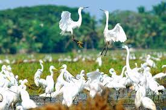
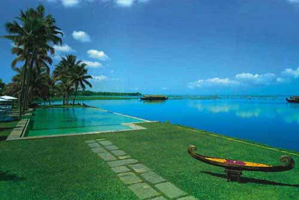

Kumarakom Bird Sanctuary Observatory Tower
Kumarakom Bird Sanctuary (also known as Vembanad Bird Sanctuary) is situated at Kumarakom in Kottayam taluk of Kottayam district in the Indian state of Kerala, on the banks of Vembanad Lake.[1] Set in the Kerala Backwaters, the bird sanctuary is visited by many migratory bird species.Developed in a rubber plantation as a bird sanctuary by Englishman George Alfred Baker,[3] the sanctuary was formerly known as Baker's Estate.[4] The Kerala Tourism Development Corporation currently manages the sanctuary.